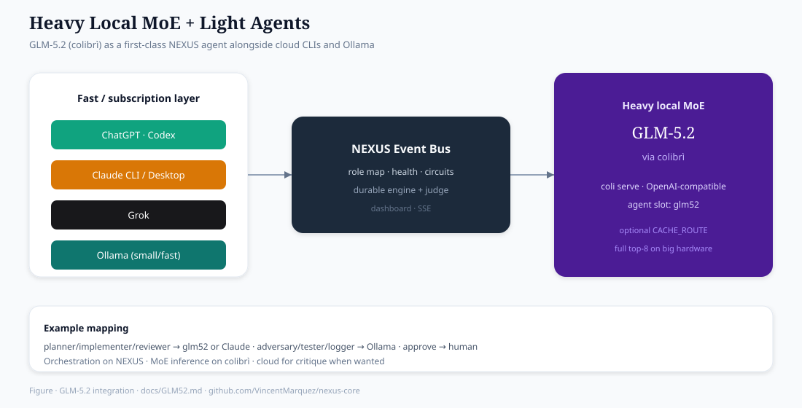

GLM-5.2 on NEXUS Core¶
How GLM-5.2 (via colibrì) fits the NEXUS multi-agent stack.
NEXUS Core does not bundle the 744B model. It treats GLM-5.2 like any other local heavyweight agent: durable tasks, bus bridges, optional MCP — on hardware that can host colibrì (e.g. large unified-memory boxes such as NVIDIA DGX Spark / GB10-class systems).
Related lab notes (measurements, CACHE_ROUTE):
https://github.com/VincentMarquez/glm52-gb10-colibri
Upstream engine:
https://github.com/JustVugg/colibri
CACHE_ROUTE (opt-in routing): https://github.com/JustVugg/colibri/pull/199
Roles GLM-5.2 can play¶

┌─────────────────────────────────────────────────────────────┐
│ NEXUS durable pipeline (plan → implement → test → approve) │
└─────────────┬───────────────────────────┬───────────────────┘
│ │
▼ ▼
agent slot: glm52 success_criteria
(colibrì behind bus) may require GLM outputs
│
▼
coli serve OR coli one-shot CLI
│
▼
GLM-5.2 int4 snap on disk (your COLI_MODEL)
| Role | How |
|---|---|
| Worker agent | Bus agent glm52 answers implement / review steps |
| Local “big brain” | Prefer GLM for hard plan/implement; small Ollama for log/test |
| Eval target | Pipeline builds scripts that call colibrì SCORE / chat |
| Benchmark job | Task = “run full-k8 decode cell; write tok/s to report” |
| MCP content | Workspace MCP can read/write GLM run configs & reports |
GLM is not a replacement for the event bus — it is one brain you attach.
Hardware reality check¶
| Need | Typical |
|---|---|
| RAM / unified memory | Tens–100+ GB for comfortable int4 MoE streaming |
| Disk | Fast NVMe (expert streaming is I/O heavy) |
| GPU | Optional but helpful (CUDA unified / dense / fuse stacks) |
| Software | colibrì build (coli / glm), model directory (COLI_MODEL) |
On smaller machines: keep Ollama as local and run GLM only for offline jobs — or skip GLM agent slot entirely.
nexus doctor reports RAM/GPU; it will not auto-download GLM weights (too large / license / path-specific).
Pattern A — OpenAI-compatible serve (recommended)¶
colibrì can expose an HTTP API (coli serve). NEXUS talks to it like any OpenAI-style chat backend.
1. Start colibrì serve (your terminal / service)¶
export COLI_MODEL=/absolute/path/to/glm52-colibri-int4
# optional speed/quality env from colibrì docs — your choice
coli serve --host 127.0.0.1 --port 8000
# OpenAI-compatible base: http://127.0.0.1:8000/v1
Exact flags follow your colibrì version — see upstream README.
2. Start NEXUS bus + GLM bridge¶
# terminal A
nexus start -y --no-open # Ollama optional; bus + dashboard
# terminal B — GLM agent on the bus
export COLI_OPENAI_BASE="http://127.0.0.1:8000/v1"
export COLI_OPENAI_MODEL="glm-5.2-colibri" # whatever id serve reports
./bridge/bridges/colibri-glm.sh glm52
3. Smoke call¶
python examples/call_bus.py --agent glm52 --prompt "Reply with: GLM_OK"
4. Use in the durable engine¶
Map heavy roles to glm52, light roles to local (Ollama):
python examples/run_with_bus.py \
--map planner=glm52,implementer=glm52,tester=local,reviewer=glm52,adversary=local,logger=local
Pattern B — CLI one-shot bridge¶
If you wrap colibrì so a prompt on stdin produces text on stdout:
export COLI_CMD='coli run --prompt-stdin' # illustrative — match your CLI
./bridge/bridges/cli-bridge.sh glm52 bash -c '$COLI_CMD'
Or use the provided colibri-glm.sh, which prefers HTTP (COLI_OPENAI_BASE) and can fall back to COLI_CMD.
Pattern C — GLM as the job, not the agent¶
NEXUS orchestrates work about GLM (cloud or small local agents plan; machine runs colibrì):
success_criteria:
- reports/glm_cell.json exists
- field decode_tok_s is a number
- CACHE_ROUTE noted on or off
Example task objective:
Run one full top-8 timed decode cell with CACHE_ROUTE=0, write decode tok/s, hit%, RSS to
reports/glm_stock.json.
Agents may only write a shell script; you (or a run_command Machine MCP) execute colibrì under the durable pipeline’s implement/test steps.
This matches lab practice: orchestration on NEXUS, heavy inference on colibrì.
CACHE_ROUTE + NEXUS¶
| Concern | Where it lives |
|---|---|
| Opt-in cache-aware MoE routing | colibrì env: CACHE_ROUTE=1 ROUTE_J=2 ROUTE_M=12 |
| Default off | Keep stock routing for quality-sensitive tasks |
| Quality A/B | Separate SCORE harness (see glm52-gb10-colibri notes) |
| NEXUS judge | Still checks your success_criteria (files, numbers) |
Example env for a GLM bridge process only:
export CACHE_ROUTE=0 # stock for identity-sensitive work
# export CACHE_ROUTE=1 ROUTE_J=2 ROUTE_M=12 # experimental speed path
Do not pretend CACHE_ROUTE is quality-free; treat it as an experimental lever (see PR #199 discussion).
Suggested role map (big box)¶
| Pipeline role | Agent | Backend |
|---|---|---|
| planner | glm52 |
colibrì |
| implementer | glm52 |
colibrì |
| reviewer | glm52 or cloud CLI |
colibrì / claude |
| adversary | local |
small Ollama |
| tester | local |
Ollama (fast) |
| logger | local |
Ollama |
| approval | human | nexus approve path |
With MCP (ChatGPT / Claude / Grok)¶
- Workspace MCP on the lab machine can read/write:
run-*.shlaunch scriptsreports/*.jsonbench outputs- colibrì config notes
- Machine MCP can queue long
colijobs through a supervised exec daemon. - Web AIs plan; GLM runs on the machine — keeps subscriptions for orchestration and local silicon for MoE.
See CONNECTORS.md.
End-to-end picture¶
You / ChatGPT / Claude / Grok
│ MCP (optional)
▼
NEXUS Core (durable tasks, judge, dashboard)
│ event bus
├──────────────┬────────────────┐
▼ ▼ ▼
Ollama (fast) CLI agents GLM-5.2 colibrì
agent=local --with-cli agent=glm52
COLI_MODEL=…
coli serve :8000
Troubleshooting¶
| Symptom | Check |
|---|---|
agent offline: glm52 |
Is colibri-glm.sh running? Same NEXUS_BRIDGE_DIR as bus? |
| HTTP connection refused | Is coli serve up on COLI_OPENAI_BASE? |
| OOM / thrash | Lower concurrent agents; don’t run 26B Ollama + GLM full pin together blindly |
| Slow first token | Normal for MoE cold experts — warm/pin per colibrì docs |
| Judge fails | success_criteria must match real files GLM (or the task) wrote |
What NEXUS does not do¶
- Download GLM-5.2 weights
- Replace colibrì’s CUDA/disk stack
- Claim cloud-level tok/s on a laptop
It orchestrates and attaches GLM when your machine can run colibrì.